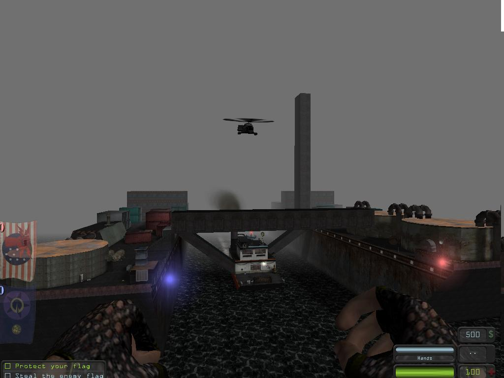

Mapping For DrawBridges
Mapping for Drawbridges
Ragdoll: I am thinking of creating a new gametype called DrawBridges. I will tell you what it involves and would appreciate any feedback. Im using Devastation.
This isnt a entirely new gametype per se, but really a twist on the standard CTF gametype.
Im going to be creating a map to test how well this would work online.
The basics
The base map is two medium sized ships, one for each team (deva owners, think DM-Tankers). Each ship has a drawbridge going to the other side. There is a smaller tugboat in between the two ships which houses the command center. At the start of the game, both bridges are up.
The drawbridges are activated by a switch in the command center, which both teams always have access to. I will be using Laser fence volumes to prevent illegal crossings to the other side. (for those not acquainted with devastation, these are a special blocking volume coupled with a laser emitter that will allow one team to pass through but will stop any members of the opposing team.)
Say team one have control of the command center. They will lower their bridge first. The end of each drawbridge when lowered will be high above the deck of the ship, only allowing members of that drawbridges team to drop off and preventing any enemy members from jumping up onto it.
Team 1s members, now on the enemy side, must steal the enemy flag and return it to thier base. Assuming that team 1 still have control of the command center, they must lower the enemy bridge to allow the flag carrier to cross and capture the flag.
What is critical here is what team has control of the command center. Nobody is going anywhere unless both bridges are raised and lowered at the right times.
Technical Details
Default gametype is CTF
Im going to be using eight special event triggers keyed to the drawbridges to display "Blue teams bridge is opening!" and "red teams bridge is closed!" Etc.
The result
See for yourself

You can see the Control room tugboat in the middle, and you can identify each ship by its coloured lights. The forward bridge (conformist) is down. The bridges are raised and enclosed to stop this becoming a snipefest (do a google image search for "devastation" and look for the p*laser rifle, fancy 12 people with them on a map like that?)
I know the ships dont look realistic in the water, but ive already used enough emitters for the funnel smoke and propeller wake, and dont want to use any more for spray and wake, you know how they laaaaag.
also note the cool flying mover helicopter, it loops around the map making periodic flybys of the ships.
Feedback
Tarquin: Sounds interesting, but how many people play Devastation? You might get more of an audience on UT2004. Also, since this is just planning for your project, it would be better moved to Mod Ideas.
Ragdoll: Thanks for the feedback, i have actually started building a map already. Devastation has a very small (its lucky to have 12 people playing online at once)audience but I would still be willing to give it a try. I dont have UT2004, only pariah (whose editor doesnt work) and devastation. Maybe someone else would be interested in developing this for UT2004?
Tarquin: What I meant is that the "Mapping For Foo" pages are mapping guides for mods that exist. This is more of a design document for a project in development.
Ragdoll: You know, something real funny happened. I sent the test version of this map to the main dev sever admin (yeah, devastation has about 3 active servers, our community is composed of about 14 people lol) but then the following day i heard he was on holiday, so he didnt get it and it wasnt running on the server. Then my friend said his cousing, who owns deva, played it on the server. Im like, unless someone ripped it off from me, or im living in the twilight zone (again), something real strange is happening.
DarkMan: Hmm, this doesn't need any mods... It's more or less just triggers and movers. Though it's a good idea, I'll give it a try after I'm done with my current map.